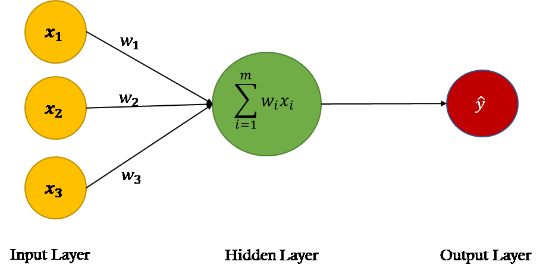

Gautam Patil | August 2022
What are Neural Networks?
Neural networks are set of algorithms inspired by the functioning of human brian. Generally when you open your eyes, what you see is called data and is processed by the Nuerons(data processing cells) in your brain, and recognises what is around you. That's how similar the Neural Networks works. They takes a large set of data, process the data(draws out the patterns from data), and outputs what it is.
Components of Neural Network
Neuron
Biological neurons transmit information with a mechanism similar to Morse Code. It receives electrical signals through the dendrites, and under the right conditions, sends an electrical impulse down the axon and out through the terminals.
It is theorized the sequence and timing of these impulses play a large part of how information travels through the brain. Most artificial neural networks have yet to capture this timing aspect of biological neurons, and instead emulate the phenomenon with simpler mathematical formulas.
Math
Computers are built with discrete 0s and 1s whereas humans and animals are built on more continuous building blocks. Because of this, some of the first neurons attempted to mimic biological neurons with a linear regression function: y = mx + b. The x is like information coming in through the dendrites and the y is like the output through the terminals. As the computer guesses more and more answers to the questions we present it, it will update its variables (m and b) to better fit the line to the data it has seen.

Nodes
The biological neuron is connected in hierarchical networks, with the output of some neurons being the input to others. These networks are represented as a connected layer of nodes. Each node carries multiple weighted inputs and applies to the neuron to the summation of these inputs and generates an output.
Algorithm
Algorithms are required in the neural network. Biological neurons have self-understanding and working capability, but how an artificial neuron will work in the same way? For this, it is necessary to train our artificial neural network. For this purpose, there are lots of algorithms used. Each algorithm has a different way of working.
Neuron Network Layers
Neuron
- Input units:- The activity of the input units represents the raw information that is fed into the network. this also called input layer.
- Hidden units:- The activity of each hidden unit is determined by the activities of the input units and the weights on the connections between the input and the hidden units. this also called hidden layer.
- Output units:- The behaviour of the output units depends on the activity of the hidden units and the weights between the hidden and output units. this also called output layer.
Application of neural networks?
Neural networks, with their remarkable ability to derive meaning from complicated or imprecise data, can be used to extract patterns and detect trends that are too complex to be noticed by either humans or other computer techniques. A trained neural network can be thought of as an “expert” in the category of information it has been given to analyse.
-
Applications:-
- Facial Recognition
- Stock Market Prediction
- Social Media Apps (The algorithms which feed people with endless scrolling are heavily based on the neural networks
- Weather Forecasting
- Natural Language Processing
- Pixel Recognition / Analysis